Gallery
View a collection of photos taken in Taman Tasik Putra.
Click an image to see more info.
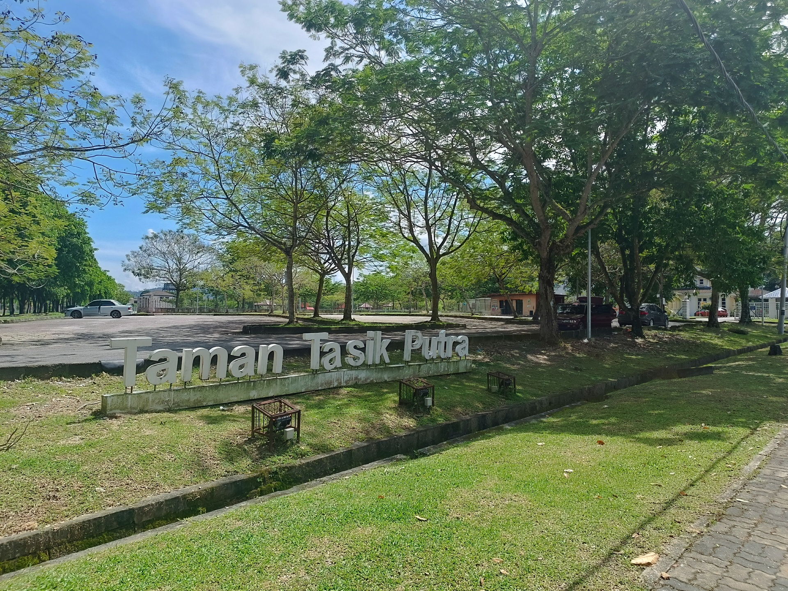
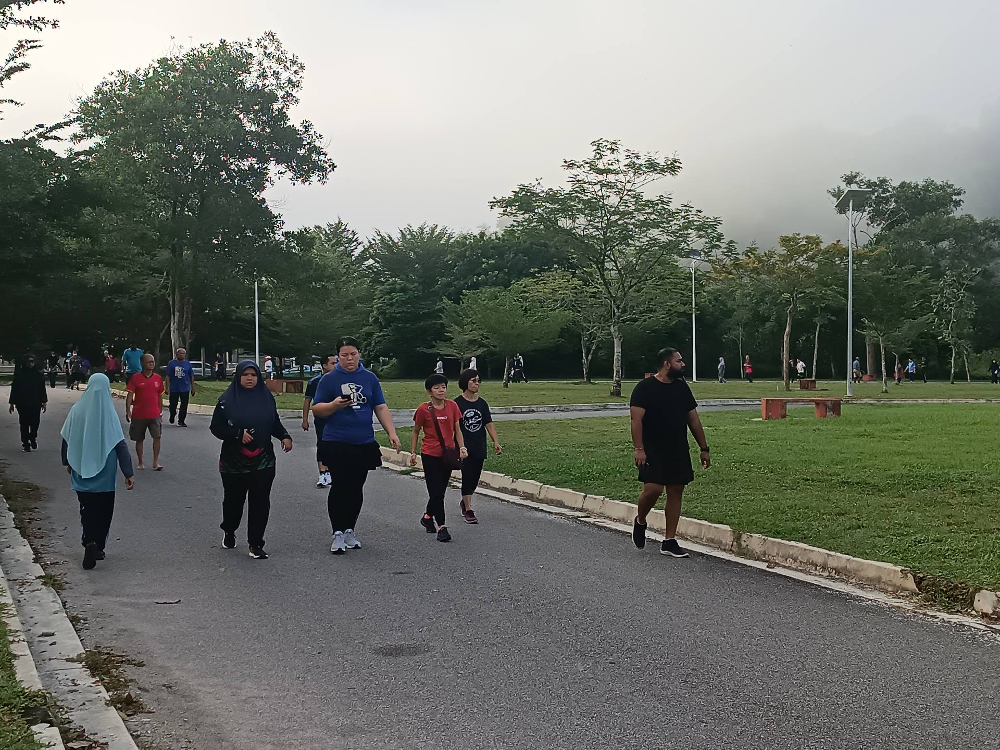
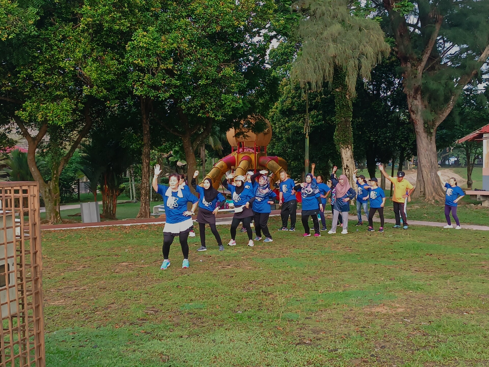
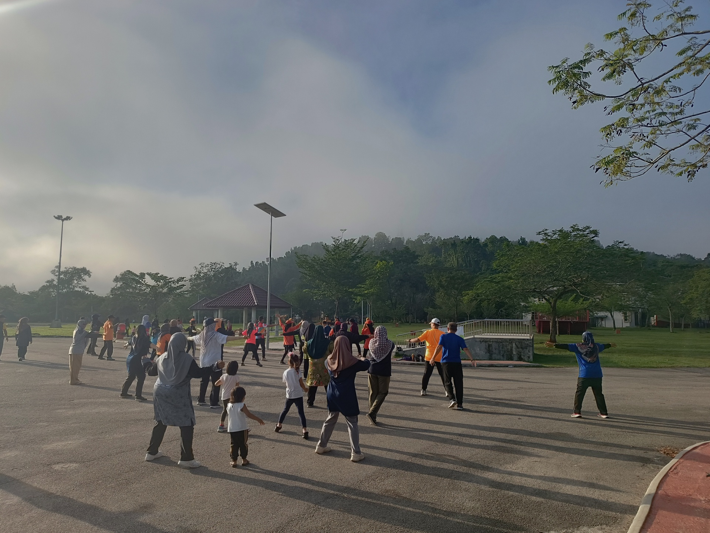
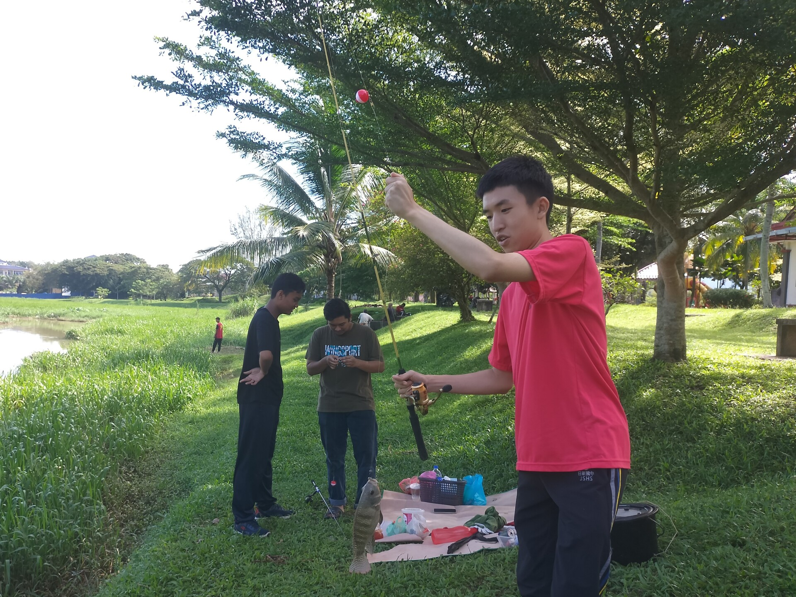
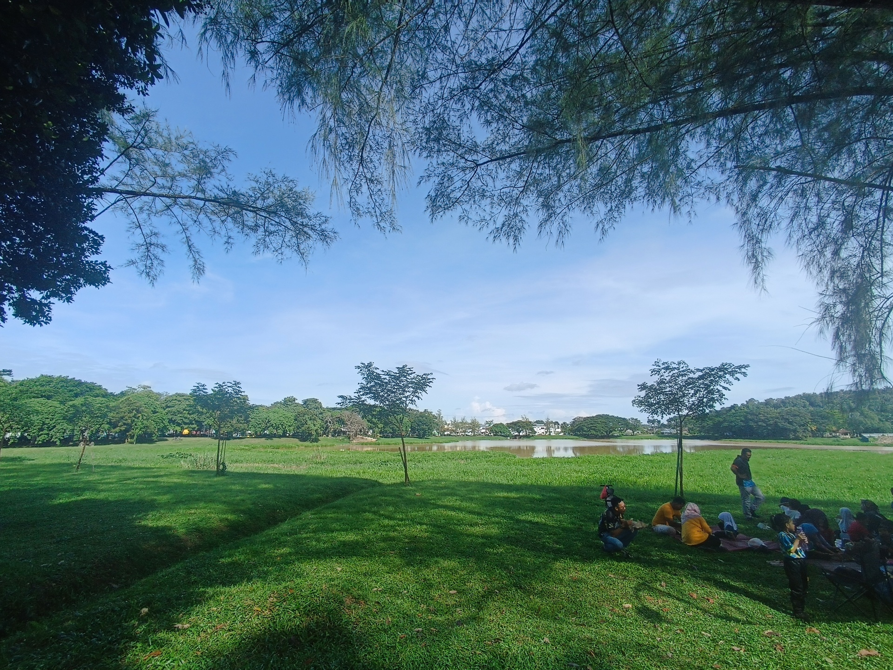
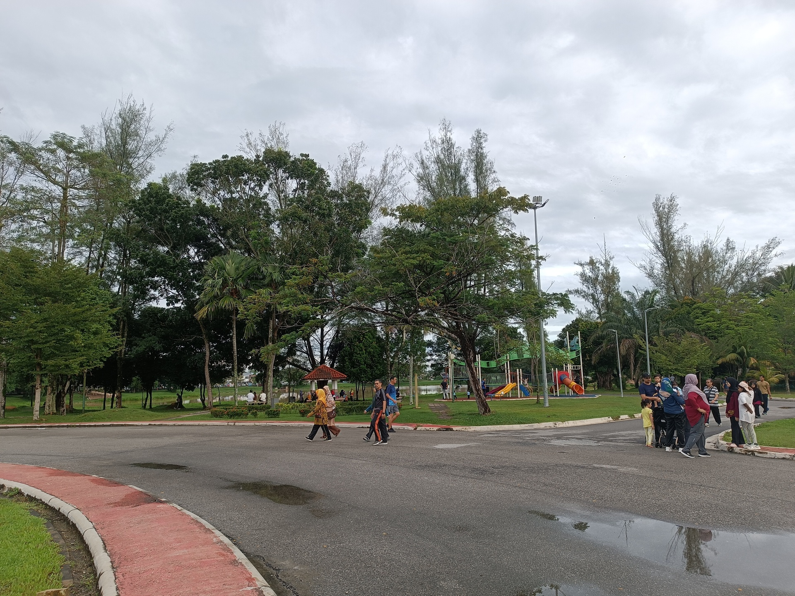
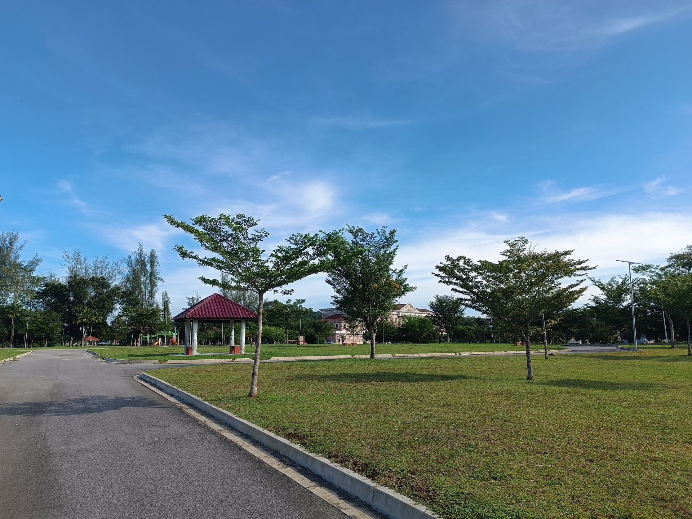
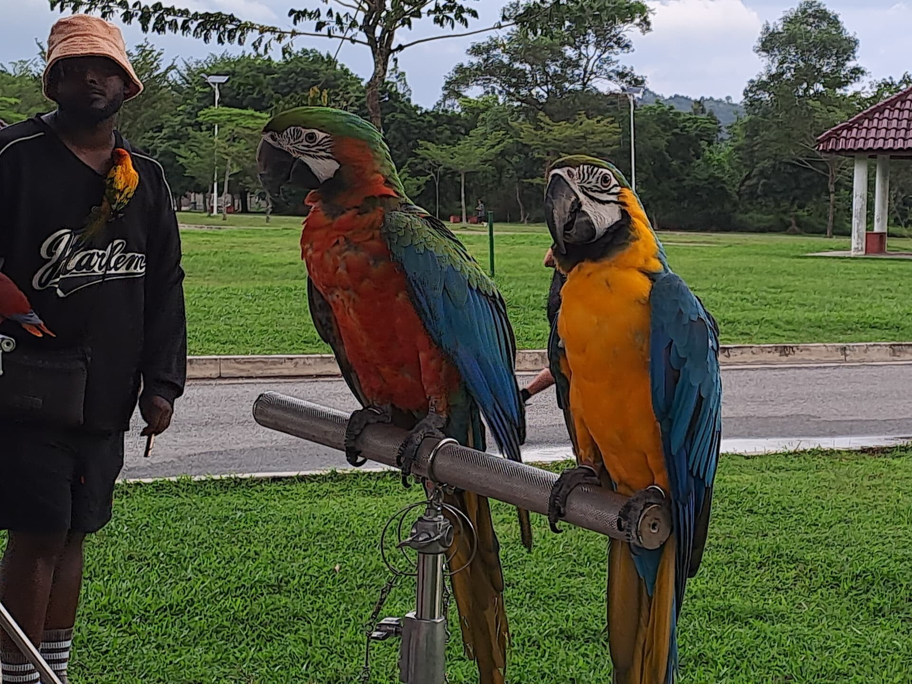
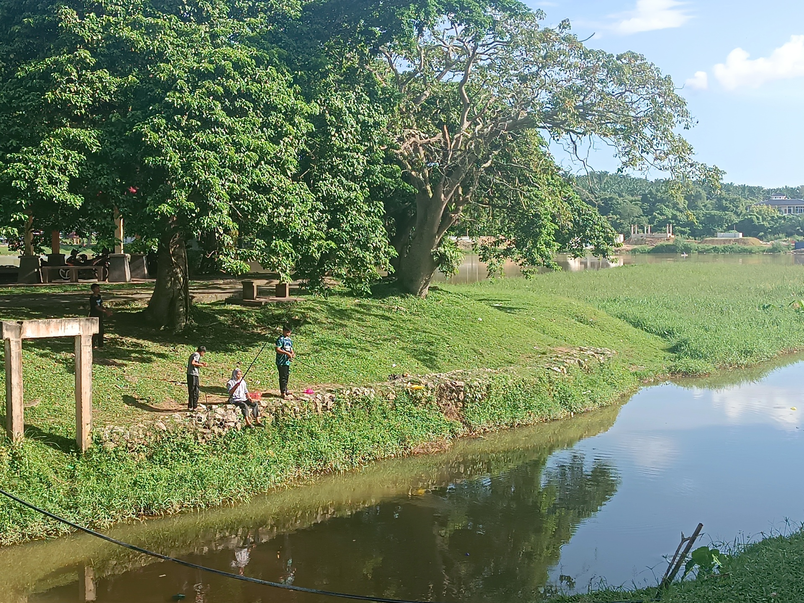
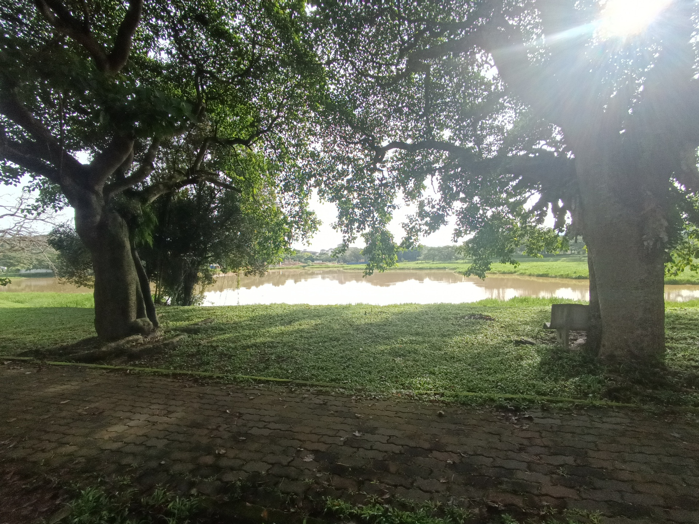
View a collection of photos taken in Taman Tasik Putra.
Click an image to see more info.










